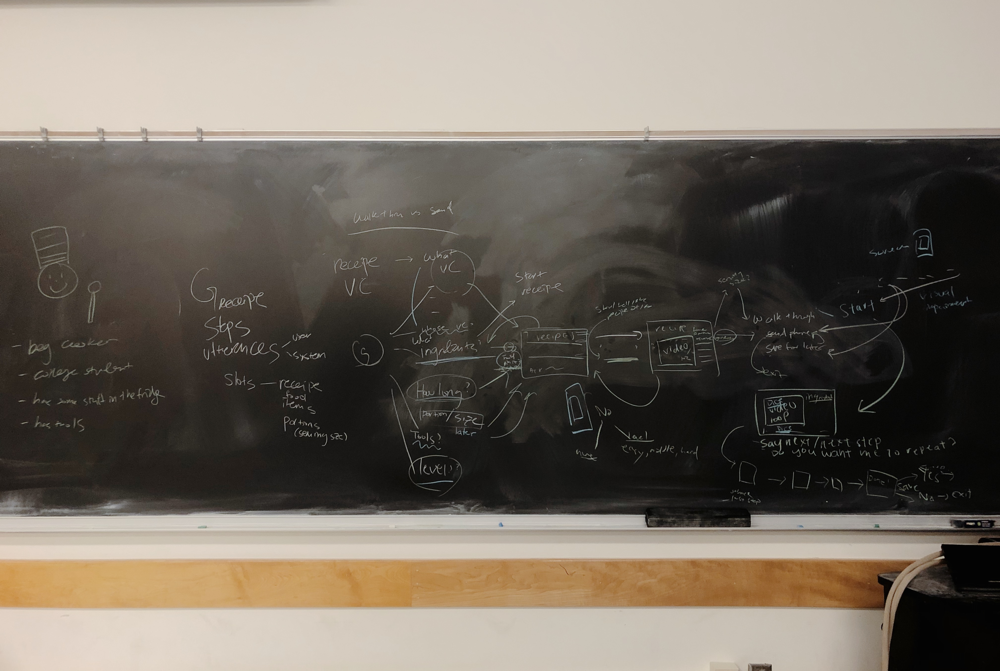
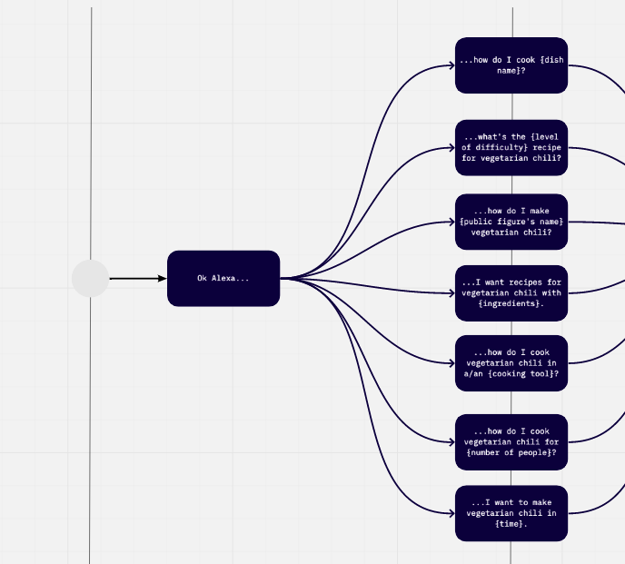

Winter 2020
UX Designer
Miro
Voiceflow
Figma

Whiteboarding a flowchart to make vegetarian chili.
Interactive Voice Response (IVR), such as the automated telephone system, operates with closed-ended questions and a long list of questions. This simple reactive system can increase frustration, wait time, and cognitive load. More advanced Voice User Interfaces (VUI) attempt to anticipate user needs instead and engage in more complex tasks.
Because there are many ways to make the same request ("Will it rain tonight?" "Is it gonna rain later?"), voice systems need multiple integration points and a universal set of commands to operate. They also need to consider a wide set of user needs and contexts. While certain systems are multimodular and thus substitue for visuals, the designers must accomodate to the user.

You can view the flowchart version of ways to make vegetarian chili here.